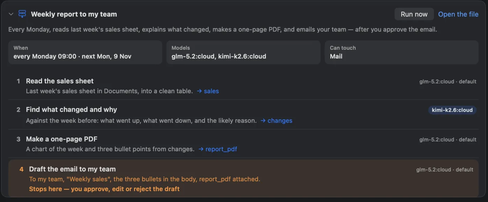
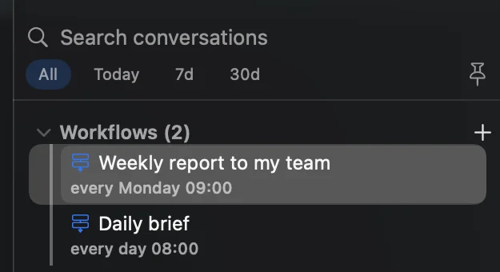
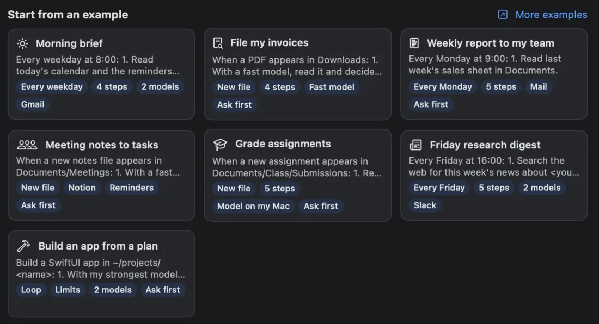

Naseem can remember a job and do it again. Describe it once, in your own words and any language; Naseem turns it into steps and runs it on your Mac when the time comes.
You say “Every Friday at 16:00, summarise this week’s progress in my project and email it to my team.”
Naseem makes the steps, picks a model for each, and marks where it stops for your OK — you review it, then Save.
Friday comes and it runs. Before the email goes out, you see the complete message and approve it.
Pick your kind of work below, copy an example into Workflows ▸ + ▸ New Workflow…, and change it to fit. If Naseem already knows your work, the New Workflow screen also suggests examples written for you.

What you approve: the steps, the model for each, and where it stops for your OK.

Your workflows, at the top of the sidebar.

Start from an example — or one written for your work.
Good to know: “a fast model” and “my strongest model” mean whichever of your set-up models fits — Naseem names them before you save. Steps marked “ask me first” show you the exact draft with Approve, Edit or Reject. A workflow runs on its own only after you approve that exact version, and only touches the folders, apps and connectors it lists. “With a model on my Mac” keeps private work — students’, clients’, patients’ — on your Mac. Workflows are part of Naseem Pro.
Grade assignments
New file5 stepsModel on my MacAsk first
When a new assignment appears in Documents/Class/Submissions:
1. Read the answer key and rubric in Documents/Class/Rubric.
2. With a model on my Mac, read the assignment and check it against the key.
3. Score each question, with a short reason for every point lost.
4. Add the student's scores to grades.csv in Documents/Class.
5. Write a feedback note for the student in Documents/Class/Feedback — ask me first.
Class insights every Friday
Every Friday3 stepsStrong model
Every Friday at 15:00:
1. Read grades.csv in Documents/Class.
2. With my strongest model, find the class average per question, the questions most students missed, and who needs help.
3. Write a one-page report with a chart to Documents/Class/Reports.
Quiz from today's lesson
On request3 steps2 models
1. Read today's lesson notes in Documents/Class/Lessons.
2. With my strongest model, write a 10-question quiz: 6 multiple choice, 4 short answer, from easy to hard.
3. With a fast model, write the answer key and save both as PDFs in Documents/Class/Quizzes.
Weekly note to parents
Every Thursday3 stepsMailAsk first
Every Thursday at 16:00:
1. Read this week's lesson notes and the class calendar.
2. Write a short, friendly note: what we learned, what's coming, what to bring.
3. Draft it as an email to the parents' list in Mail — ask me first.
Lecture to flashcards
New file4 stepsFast model
When a new recording or notes file appears in Documents/Lectures:
1. If it's a recording, transcribe it.
2. With a fast model, summarise it in ten lines.
3. Write 15 question-and-answer flashcards and save them as an Anki CSV next to it.
4. Add any deadline it mentions to Reminders.
Weekly study plan
Every Sunday3 stepsCalendarAsk first
Every Sunday at 19:00:
1. Read this week's calendar and the reminders due this week.
2. Plan study blocks around my classes: the hardest subject first, no block longer than 90 minutes.
3. Put the blocks in my calendar — ask me first.
Paper digest
Every morning4 steps2 models
Every weekday at 7:30:
1. Search for papers published yesterday on <your topic>.
2. With a fast model, keep the five most relevant.
3. With my strongest model, summarise each in three lines: question, method, finding.
4. Save the digest as digest-<date>.md in Documents/Research.
Friday research digest
Every Friday5 steps2 modelsSlack
Every Friday at 16:00:
1. Search the web for this week's news about <your topic>.
2. With a fast model, drop duplicates and anything older than a week.
3. With my strongest model, write a one-page digest with a source link for every claim.
4. Save it as a PDF in Documents/Digests.
5. Post a three-line summary to Slack #team — ask me first.
Receipts to expenses
New file4 stepsFast model
When a receipt (PDF or photo) appears in Documents/Receipts:
1. With a fast model, read the date, the shop, the amount and the category.
2. Add a row to expenses.csv in Documents/Receipts.
3. Rename the file <date>-<shop>-<amount>.
4. On the first day of each month, make a one-page summary by category.
Weekly report to my team
Every Monday4 stepsMailAsk first
Every Monday at 9:00:
1. Read last week's sales sheet in Documents.
2. With my strongest model, find what changed against the week before, and why.
3. Make a one-page PDF with a chart and three bullet points.
4. Send the email to my team in Mail with the PDF attached — show me the complete email and ask me first.
Meeting notes to tasks
New fileNotionRemindersAsk first
When a new notes file appears in Documents/Meetings:
1. With a fast model, summarise it in five lines.
2. List every action item with its owner and due date.
3. Add the action items to my Notion page "Tasks" — ask me first.
4. Put the ones that are mine in Reminders, with their dates.
CVs against the job
New file4 stepsModel on my Mac
When a new CV appears in Documents/Hiring/<role>:
1. Read the job description in Documents/Hiring/<role>/job.md.
2. With a model on my Mac, score the CV against each requirement, with the line that proves it.
3. Add the candidate and the scores to shortlist.csv.
4. Every Friday, list the top five with one line each.
Contract checklist
New file3 stepsModel on my Mac
When a new contract PDF appears in Documents/Contracts/Incoming:
1. With a model on my Mac, list its key clauses: term, payment, termination, liability, confidentiality.
2. Mark anything unusual against my standard terms in Documents/Contracts/standard.md.
3. Write a one-page risks note next to the contract.
Video to everything
New file5 steps2 models
When a new video appears in Movies/Uploads:
1. Transcribe it.
2. With my strongest model, write five titles and a description.
3. Make chapters with timestamps from the transcript.
4. With a fast model, suggest three thumbnail ideas.
5. Save it all as <video name>.md next to the video.
A week of posts from a blog post
New file3 stepsAsk first
When a new post appears in Documents/Blog:
1. Read it and pick the five strongest ideas.
2. Write one short social post per idea, each with a different hook.
3. Put them in my calendar Monday to Friday at 10:00 as drafts — ask me first.
Build an app from a plan
LoopLimits2 modelsAsk first
Build a SwiftUI app in ~/projects/<name>:
1. With my strongest model, plan the milestones and show me the plan — ask me first.
2. Repeat until every milestone is done (at most 12 rounds, 3 hours, $15):
a. With a coding model, build the next milestone.
b. Run the tests and fix what fails.
3. Write a short README of what was built and how to run it.
Nightly test run
Every night3 stepsFast model
Every night at 2:00, in this project:
1. Pull the latest main and run the full test suite.
2. If anything fails, with a fast model, read the failures and group them by cause.
3. Write the groups, with the failing test names, to naseem/test-report.md.
Release notes from the week
Every Friday3 stepsStrong model
Every Friday at 17:00, in this project:
1. Read this week's merged commits.
2. With my strongest model, group them into new, improved and fixed, in plain words for users.
3. Save them as naseem/release-notes-<date>.md.
Morning brief
Every weekday4 steps2 modelsGmail
Every weekday at 8:00:
1. Read today's calendar and the reminders due today.
2. With a fast model, skim my unread Gmail and pick out anything urgent.
3. Check the weather where I am.
4. With my strongest model, write a three-line brief: what's on, what's urgent, what to wear.
Trip ready
Calendar4 stepsWeather
Two days before any trip in my calendar:
1. Check the weather at the destination for each day.
2. Make a packing list for that weather and the trip's length.
3. Find the booking emails for flights and hotel, and list anything missing.
4. Save it as a note named after the trip.
Bills before they're due
Every Sunday3 stepsRemindersAsk first
Every Sunday at 18:00:
1. Look through this month's emails in Mail for bills and their due dates.
2. List the ones due in the next 10 days with the amount.
3. Add a reminder for each, two days before it's due — ask me first.
File my invoices
New file4 stepsFast modelAsk first
When a PDF appears in Downloads:
1. With a fast model, read it and decide whether it's an invoice; if it isn't, stop.
2. Pull out the date, the vendor and the amount.
3. Move it to Documents/Invoices/<year>/<vendor> — ask me first.
4. Add a row to invoices.csv in Documents/Invoices.
موجز الصباح (بالعربية)
كل يوم عمل4 خطواتنموذجان
كل يوم عمل الساعة 8:00:
1. اقرأ مواعيد اليوم في التقويم والتذكيرات المستحقة اليوم.
2. بنموذج سريع، تصفّح رسائل Gmail غير المقروءة واستخرج كل ما هو عاجل.
3. اعرف الطقس حيث أكون.
4. بأقوى نموذج لديّ، اكتب موجزًا من ثلاثة أسطر: ما المطلوب اليوم، وما العاجل، وماذا أرتدي.